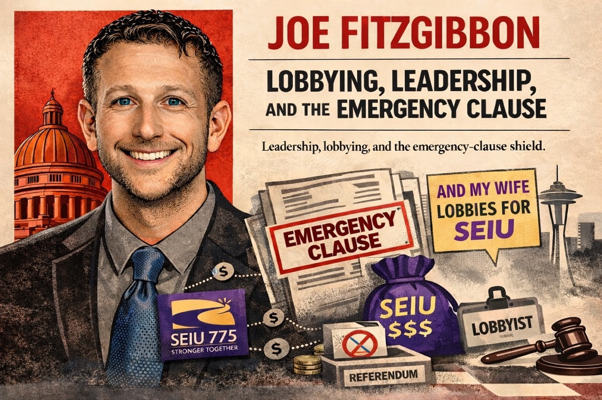

Fitzgibbon's spouse, Lindsey Grad, is the Legislative Director at SEIU Healthcare 1199NW, earning $100K-$200K per year. This is the household's largest income source by a significant margin, exceeding Fitzgibbon's legislative salary of $60K-$100K.
Grad is a PDC-registered lobbyist for SEIU 1199NW, continuously registered from 2023 through 2026. Her registration means she is authorized to directly contact legislators, attend committee hearings, and advocate for SEIU's policy positions in Olympia. She does this while sharing a household with the man who controls the House floor schedule.
The House Majority Leader decides which bills get a floor vote. His spouse lobbies for bills she wants on that floor. They share an address.
SEIU's financial relationship with Fitzgibbon extends well beyond the spousal employment. The SEIU ecosystem is his dominant donor bloc:
| Source | Total | Notes |
|---|---|---|
| SEIU 1199NW (spouse's employer) | $12,000+ | Multiple cycles |
| SEIU 775 Quality Care Committee | $8,000+ | Multiple cycles |
| SEIU Healthcare PAC | $5,000+ | Multiple cycles |
| Other SEIU entities | $5,000+ | Various locals and PACs |
Total SEIU ecosystem donations to Fitzgibbon: $30,000+ across all entities and election cycles. This makes SEIU his largest organizational donor by a wide margin.
The structure: SEIU employs his wife ($100K-$200K), registers her as a lobbyist, donates $30K+ to his campaigns, and lobbies the committee he oversees. Each of these facts is independently verifiable. Together they describe a financial ecosystem in which the Majority Leader's household income, campaign funding, and legislative agenda all flow through the same organization.
Fitzgibbon has sponsored 4 bills with emergency clauses during the current session. An emergency clause makes a bill "necessary for the immediate preservation of the public peace, health, or safety" and, critically, blocks citizens from challenging the law through a referendum. Normally, Washington voters can collect signatures to put any new law on the ballot. An emergency clause eliminates that right.
Among Fitzgibbon's emergency clause bills:
| Bill | Subject | EC Status |
|---|---|---|
| HB 2081 | B&O tax restructuring | Emergency clause attached |
| 3 additional bills | Various | Emergency clause attached |
The pattern: SEIU pays his household, funds his campaigns, lobbies his committee, and he sponsors legislation that voters cannot challenge at the ballot box. Whether or not this is intentional coordination, the structural incentives point in the same direction.
| Who | Source | Role | Income |
|---|---|---|---|
| Spouse | SEIU Healthcare 1199NW | Legislative Director | $100K-$200K |
| Filer | WA House of Representatives | State Representative | $60K-$100K |
Fitzgibbon's household income is dominated by SEIU. His spouse's salary from the union exceeds his legislative pay. This creates a financial dependency: the Majority Leader's household standard of living is more connected to SEIU's fortunes than to his public service.
Fitzgibbon is not the only legislator in this series with SEIU connections. Rep. Liz Berry's firm received $86,950 from SEIU 775 while she chaired the committee SEIU lobbies. Former lobbyist Shaun Scott represented SPAN (an SEIU-adjacent organization) before entering the legislature. The SEIU ecosystem maintains 9 registered lobbyist firms in Olympia for SEIU 775 alone, plus separate registrations for 1199NW, the State Council, and other locals.
Fitzgibbon sits at the center of this web. He is the highest-ranking SEIU-connected legislator in the House.
Jurisdiction note: Recusal obligations fall under the Legislative Ethics Board (RCW 42.52). Campaign contributions are regulated by the PDC under RCW 42.17A. These are separate enforcement bodies with separate authority.
Under current Washington law, there is no blanket recusal requirement for legislators whose spouses are registered lobbyists. RCW 42.52 does not treat spousal lobbying registration as a per se conflict trigger. A recusal obligation would arise only if Fitzgibbon participated in a specific transaction that would directly benefit his spouse in a quantifiable financial way, not merely because her employer's policy goals overlap with his legislative jurisdiction.
This means Fitzgibbon has not violated any existing recusal requirement. The question is whether the law adequately addresses a situation where a legislative leader's household income, campaign funding, and legislative agenda all flow through the same organization. That is a policy question for voters, not a legal finding.
Income ranges, not exact figures. All income figures on this page are PDC-reported bands (e.g. "$100K-$200K"), not verified dollar amounts. A legislator at the bottom of a range and one at the top receive the same treatment. Conclusions drawn from these ranges are approximate.
Washington is a citizen legislature. The state constitution envisions part-time legislators who maintain outside careers. Outside income is expected, not inherently problematic. The presence of outside income on this page is not itself a finding. What matters is the structural relationship between that income and the legislator's official authority.
This is an editorial investigation, not a legal finding. The automated screening score on the legislature page is a first-pass filter that measures structural complexity. This deep-dive profile is a hand-investigated editorial analysis based on public records. Neither constitutes a determination that any law has been violated. The Legislative Ethics Board (LEB) and Public Disclosure Commission (PDC) are the bodies with enforcement authority.